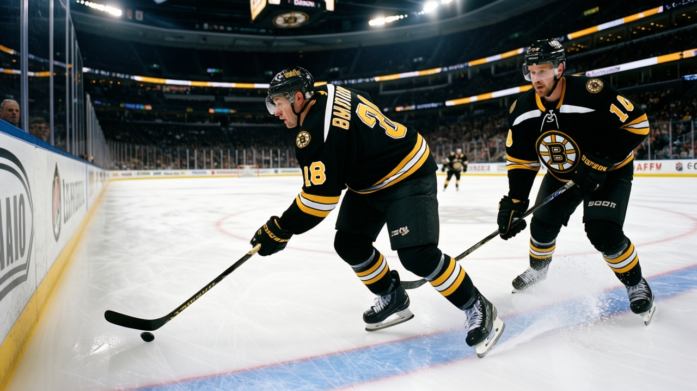

ATL
ATLContract-Year Watch: 55 Points, $1.90M, and the Expiring Deal Nobody Is Tracking
Samsonov is tied for the most points in the league's expiring class. His team is 29 points. His Art Ross winner is out until January.
 E.J. "Ears" CallahanInsider · The Hot Stove
E.J. "Ears" CallahanInsider · The Hot Stove

Samsonov as the hidden expiring value the deadline will test

 Sergei Samsonov81 [874] has 55 points in 30 games for
Sergei Samsonov81 [874] has 55 points in 30 games for  Boston Bruins. The winger is 26, on a $1.90M deal with one year left.
Boston Bruins. The winger is 26, on a $1.90M deal with one year left.
He is tied for the most points in the league's expiring class, matching  Eric Daze85 [212] in
Eric Daze85 [212] in  Chicago Blackhawks at 55. No other player on the 30-name list has more. The next best is
Chicago Blackhawks at 55. No other player on the 30-name list has more. The next best is  Ilya Kovalchuk92 [509] at 52, then
Ilya Kovalchuk92 [509] at 52, then  Dany Heatley90 [377] at 49.
Dany Heatley90 [377] at 49.
The context is what makes the number land. Boston is 29 points, 11-14-3, in the Atlantic. They lost  Glen Murray79 [693], last season's Art Ross and Lady Byng winner, to an arm injury with a return date of January 12.
Glen Murray79 [693], last season's Art Ross and Lady Byng winner, to an arm injury with a return date of January 12.  Andy Hilbert71 [396] is out with a knee until December 31. The floor in that room is 55 points and a man named Samsonov.
Andy Hilbert71 [396] is out with a knee until December 31. The floor in that room is 55 points and a man named Samsonov.
The value is in the salary, not the grade
His overall is 87. That is not a top-10 grade on the expiring list. It sits behind Turco, Bertuzzi, Gaborik, Kovalchuk, Belfour, Cechmanek, Heatley, and a wall of 88s. But 55 points at $1.90M on a 29-point team is the kind of deal the deadline exists for. A club that needs a top-6 winger and is paying $1.90M for one is not overpaying. It is the opposite.
Joe Thornton told The Tunnel's Jan Kowalczyk after a loss to Ottawa that "the points don't, they don't feel like much when the room's quiet." The room in Boston is 29 points. Samsonov's 55 are the only number in that room that is climbing.
The deadline question is simple. A 26-year-old at 55 points on $1.90M goes back to Boston or to another team for a first-rounder. The expiring list has 30 names. This is the one that does not belong on it.